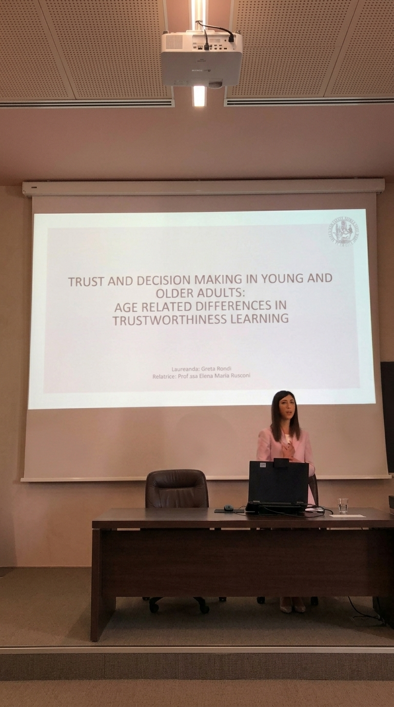
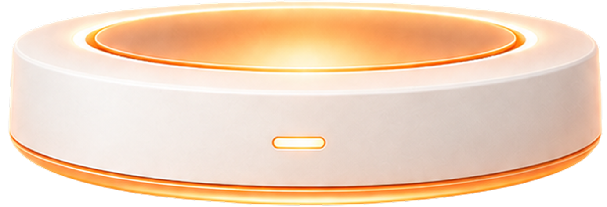
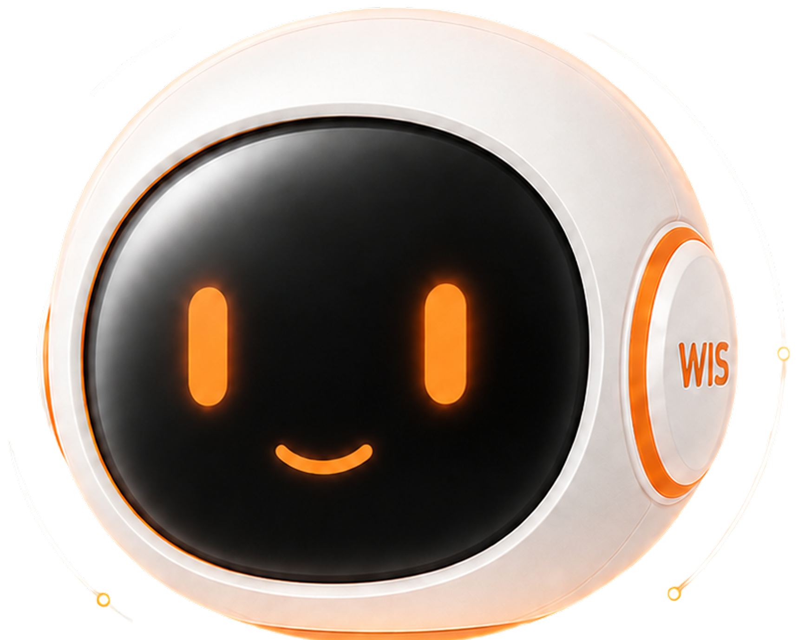
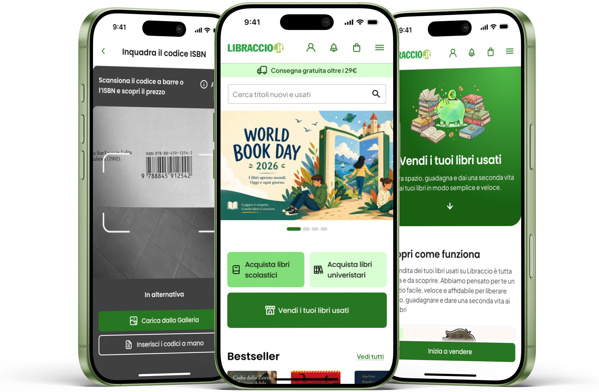
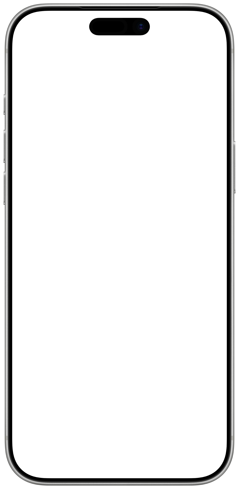
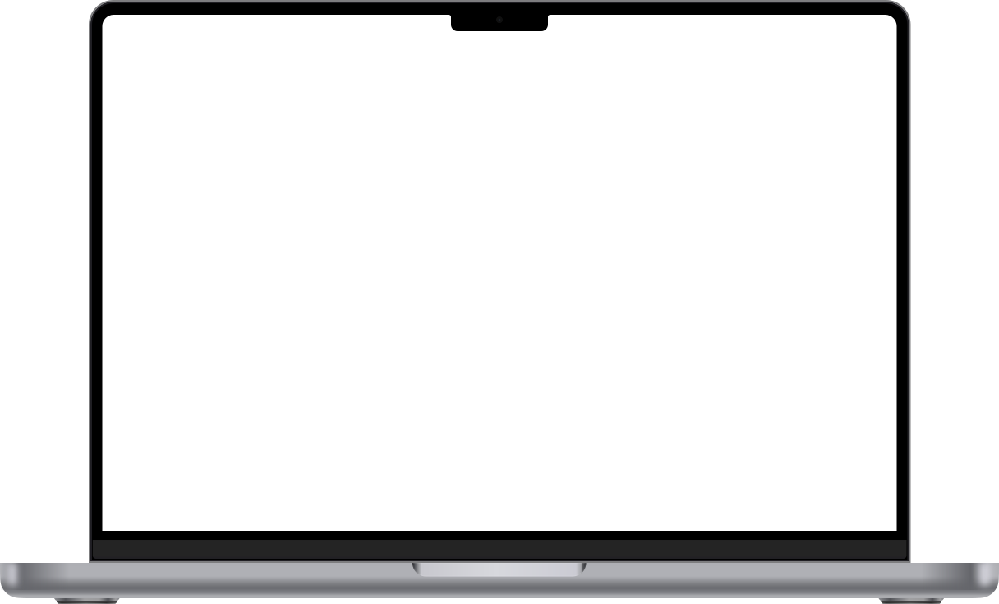
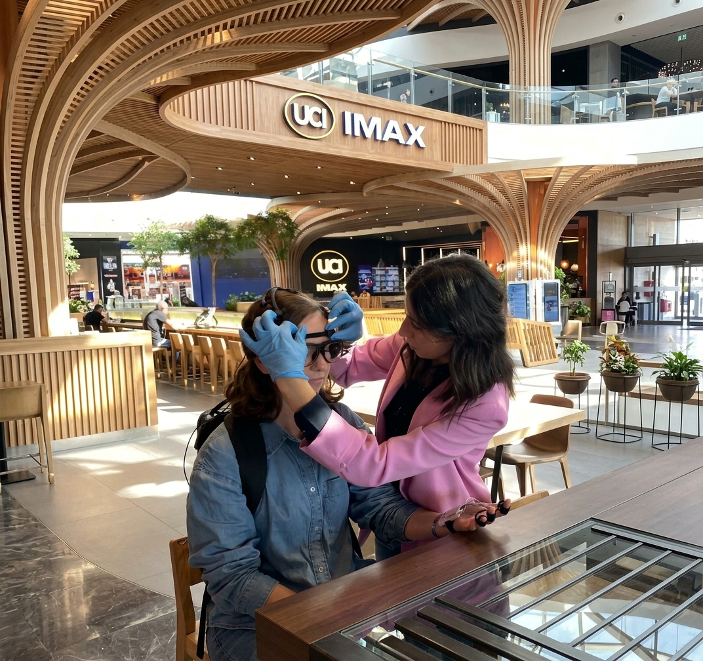
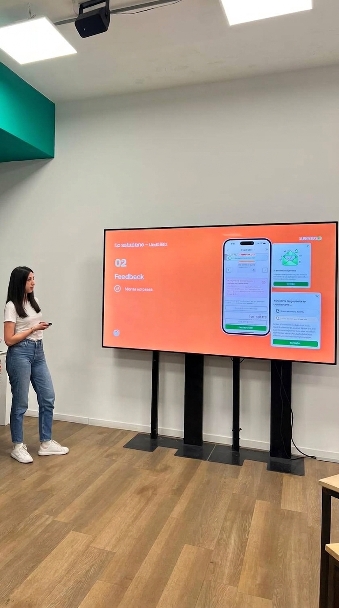

Psychology & Neuroscience
Studied cognitive psychology, then specialised in neuroscience, learning to treat attention, perception and decision-making as things you can measure, not just guess.







An AI travel companion, designed and built end to end

Studied cognitive psychology, then specialised in neuroscience, learning to treat attention, perception and decision-making as things you can measure, not just guess.

Designed and ran product testing studies at a neuromarketing lab using EEG, eye-tracking and physiological measures, on digital products, TV commercials and packaging. Took full ownership of projects, managing them directly with clients.

Enrolled in a UX/UI design master at Talent Garden to go from observing behavior to building things, learning research, ideation and prototyping in Figma, with AI now a core part of my workflow.